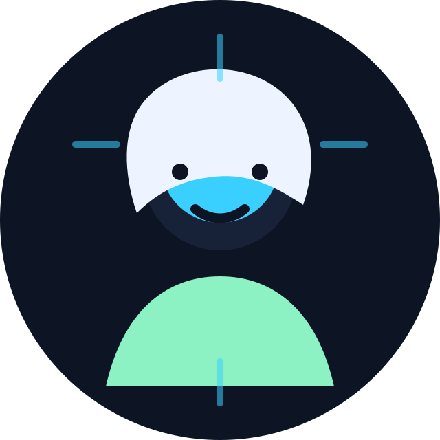

Portfólio de Ciência de Dados
Luis Fernando
Estudante de Ciência de Dados
Transformando curiosidade, estatística e código em projetos reais de análise, visualização e aprendizado de máquina desde o primeiro período.

Disponível para aprender, colaborar e evoluir
1º
Período
12
Skills
5
Trilhas
Sobre mim
Construindo uma base sólida para resolver problemas com dados
Sou estudante de Ciência de Dados no primeiro período, com interesse em transformar fundamentos acadêmicos em projetos práticos. Meu foco atual é desenvolver uma base forte em programação, estatística, pensamento analítico e comunicação visual.
Este portfólio foi criado para acompanhar minha evolução desde o começo da graduação, com espaço para registrar futuros projetos de Estatística, Machine Learning, Visualização de Dados e aplicações em Python.
Ciência de Dados
Estatística
Inteligência Artificial
Machine Learning
Visualização de Dados
Objetivo profissional: evoluir para atuar em projetos de análise de dados, modelagem preditiva e criação de dashboards que apoiem decisões reais.
Habilidades
Competências em desenvolvimento contínuo
As barras representam o estágio atual de estudo e prática. Elas podem ser atualizadas conforme novos cursos, projetos e desafios forem concluídos.
SQL
Estatística
Machine Learning
Power BI
Excel
Pandas
NumPy
Matplotlib
Scikit-Learn
Git
GitHub
Formação acadêmica
Linha do tempo de aprendizado
Curso de Ciência de Dados
Universidade: Universidade Federal de Viçosa (UFV)
Período: 1º período em andamento
Fundamentos de programação e estatística
Estudos iniciais em Python, lógica, álgebra, estatística descritiva e análise exploratória.
Certificações futuras
Espaço reservado para certificados em Python, SQL, Power BI, Machine Learning e Cloud.
Projetos
Laboratório prático de dados
Projetos carregados por JSON para facilitar atualizações sem mexer no HTML.
Dashboard
Indicadores de evolução
Tecnologias
Ferramentas no radar de aprendizado
Python
SQL
Power BI
Pandas
NumPy
Scikit-Learn
Git
GitHub
Jupyter
Python
SQL
Power BI
Pandas
NumPy
Scikit-Learn
Git
GitHub
Jupyter
Contato